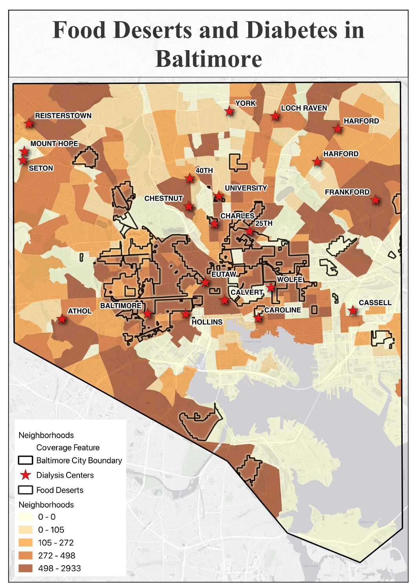
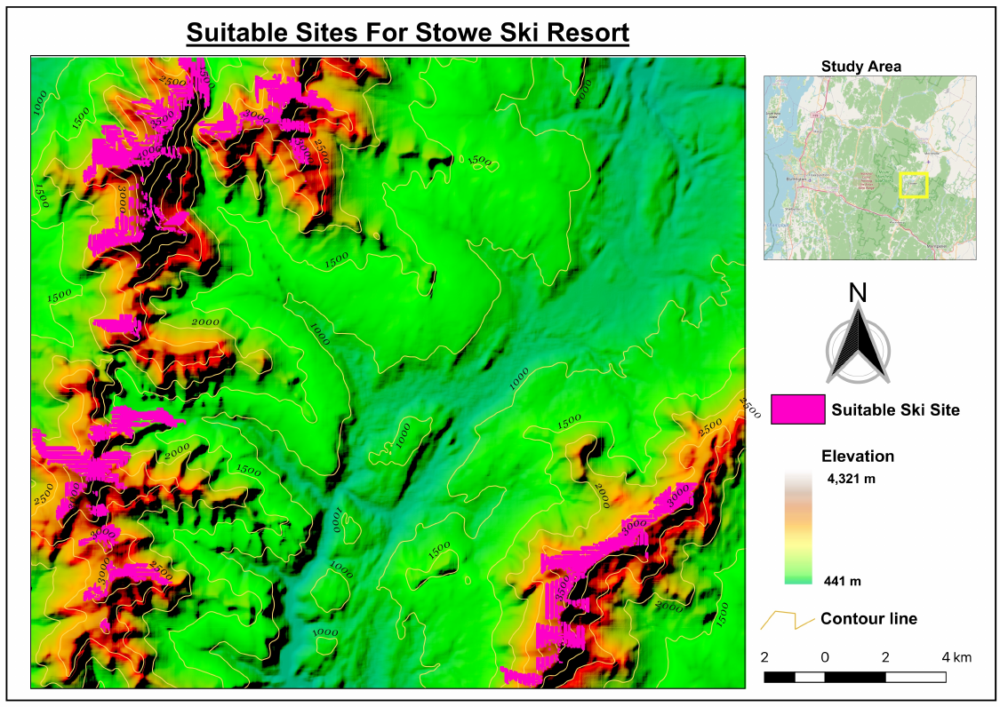
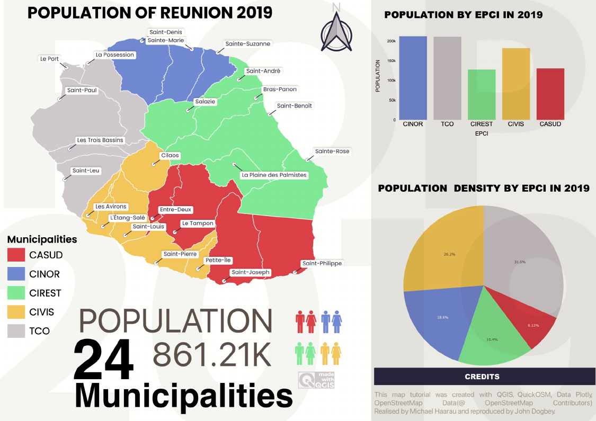
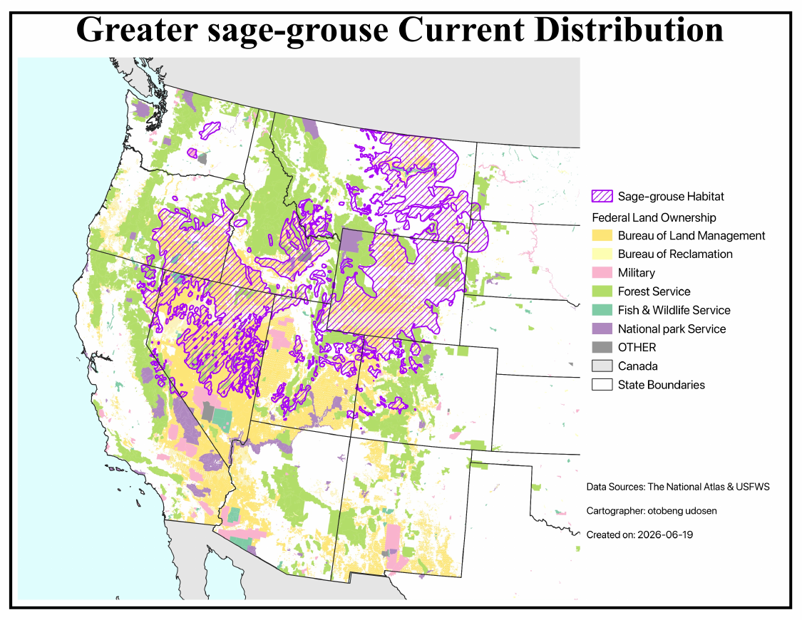

Data Analytics + Geospatial Intelligence
Leveraging robust analytical skills and spatial methodologies to transform complex data into actionable insights. A dedicated professional at the intersection of public health, institutional research, and advanced geospatial analysis.

The Problem: Investigating the spatial correlation between food desert locations and diabetes prevalence within Baltimore, highlighting areas of critical public health concern.
The Spatial Methodology: Utilized QGIS for multi-layer vector overlay analysis, integrating Baltimore city boundaries, neighborhood polygons, and point data for dialysis centers. Employed choropleth symbology to visualize diabetes prevalence across neighborhoods, identifying underserved areas with limited access to healthy food options.
The Insight/Result: This analysis revealed significant spatial disparities, pinpointing specific neighborhoods where residents face compounded challenges of food insecurity and higher diabetes rates, informing targeted public health interventions.

The Problem: Identifying geomorphologically suitable land parcels for potential ski resort development or expansion, considering elevation, slope, and existing infrastructure.
The Spatial Methodology: Performed advanced terrain analysis in QGIS using high-resolution Digital Elevation Models (DEMs). Derived contour lines and slope maps, then applied multi-criteria evaluation to delineate areas meeting specific elevation ranges and gradient requirements for ski runs. Vector overlays were used to exclude unsuitable zones.
The Insight/Result: The model successfully identified and visualized prime candidate sites for ski resort infrastructure, optimizing for natural terrain advantages and minimizing environmental impact, providing data-driven recommendations for strategic planning.

The Problem: Visualizing and analyzing the 2019 population distribution and density across the municipalities of Réunion Island to understand demographic patterns and regional disparities.
The Spatial Methodology: Developed a comprehensive cartographic dashboard using QGIS, featuring a municipal choropleth map symbolizing population counts. Integrated supplementary data visualizations, including bar charts for EPCI (Établissements Publics de Coopération Intercommunale) population and pie charts for population density, to provide a multi-faceted demographic overview.
The Insight/Result: This project delivered an intuitive and informative visual summary of Réunion's demographic landscape, enabling quick identification of densely populated urban centers versus more rural areas, crucial for regional planning and resource allocation.

The Problem: Mapping the current distribution of the Greater Sage-grouse across the Western United States and its intersection with various federal land management jurisdictions.
The Spatial Methodology: Executed a large-scale spatial overlay analysis in QGIS, integrating sage-grouse habitat polygons with federal land ownership data from the National Atlas and USFWS. The map categorizes land managed by the BLM, Forest Service, National Park Service, and other agencies, highlighting the multi-jurisdictional nature of habitat conservation.
The Insight/Result: This biogeographic visualization provides a critical overview of habitat fragmentation and the shared responsibility of federal agencies in protecting sage-grouse populations, supporting collaborative conservation planning and policy development.
Old Dominion University | 2025 – Present
Old Dominion University, Academic Affairs Administration | 2023 – 2025
Old Dominion University | 2023 – 2025
Focused on advanced statistical methods and data-driven public health interventions.
University of Ibadan | 2018 – 2021
Specialized in environmental health and safety management, integrating data for risk assessment.
University of Calabar | 2010 – 2015
Developed foundational scientific research and analytical skills.